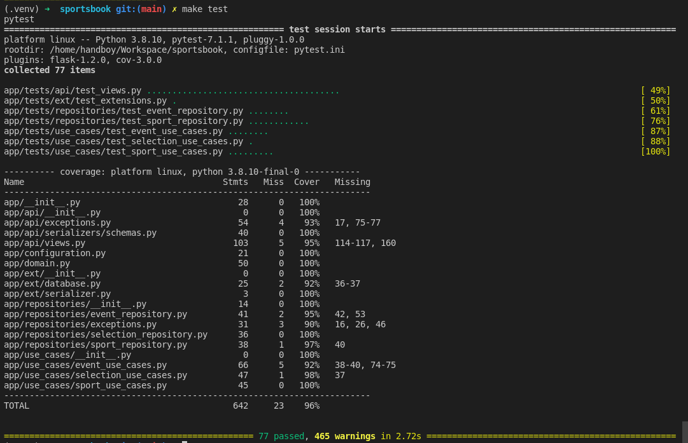

Getting Started
Full code on github.
Setup Development to run the project
# Python path
$ which python3
# Create virtual enviroment
$ virtualenv --python='/usr/bin/python3' .venv
# Activate virtual enviroment
$ source .venv/bin/activate
# Install requirements
$ make install
# Run project
$ make run
Documentation
You can acces the documentation online: link To run locally:
# Run and access Mkdocs
$ mkdocs serve
INFO - Building documentation...
INFO - Cleaning site directory
INFO - Documentation built in 0.30 seconds
INFO - [19:46:59] Serving on http://127.0.0.1:8000/
INFO - [19:46:59] Browser connected: http://127.0.0.1:8000/
Tests
# Run all tests
$ make tests
# Run all the tests in a particular test file
$ pytest tests/folder/test_resource.py
# Run only particular test class in that file
$ pytest tests/folder/test_resource.py::TestResouce

- These warnings are thrown by flask-apispec plugin.
Project Struture
The project apply some clean archtecture to share responsibilities:
- Api: Contains all endpoints.
- Use Cases: This layer contains application specific business rules. It encapsulates and implements all of the use cases of the system.
- Repositories: Contains logic to send and retrieve data from database.
- Domain: The entities that encapsulate enterprise wide business rules.
Above we have a explanation about all project folders:
.
├── app
│ ├── api # Api Views, exceptions, and Serializers
│ ├── configuration.py # Config environment variables
│ ├── conftest.py # define the fixture functions to test files.
│ ├── domain.py # The entities enterprise wide business rules.
│ ├── ext # Flask extensions
│ │ ├── database.py
│ │ ├── __init__.py
│ │ └── serializer.py
│ ├── __init__.py # Create Flask App
│ ├── repositories # Interfaces to do comunication with database
│ │ ├── event_repository.py
│ │ ├── exceptions.py
│ │ ├── selection_repository.py
│ │ └── sport_repository.py
│ ├── schema.sql # Sql Script to init the database.
│ ├── tests # All project tests
│ └── use_cases # This layer contains application specific business rules.
│ ├── event_use_cases.py
│ ├── __init__.py
│ ├── selection_use_cases.py
│ └── sport_use_cases.py
├── docs # Project Documentation
├── Makefile
├── pytest.ini
├── README.md
└── requirements # Project Requirements
├── base.txt
└── dev.txt
Next Steps
- Filters: All (sports/events/selections) with a name satisfying a particular regex
- Filters: All (sports/events) with a minimum number of active (events/selections) higher than a threshold
- Filters: Events scheduled to start in a specific timeframe for a specific timezone
- Try fix warnings from tests.
- Add authorization in endpoints.
- Expecify the error when send data different expected by scheme.
- Add pagination in list endpoints.
- Remove code duplication between repositories.
- Add partial update.
- Register Api exception.
- Increase coverage.